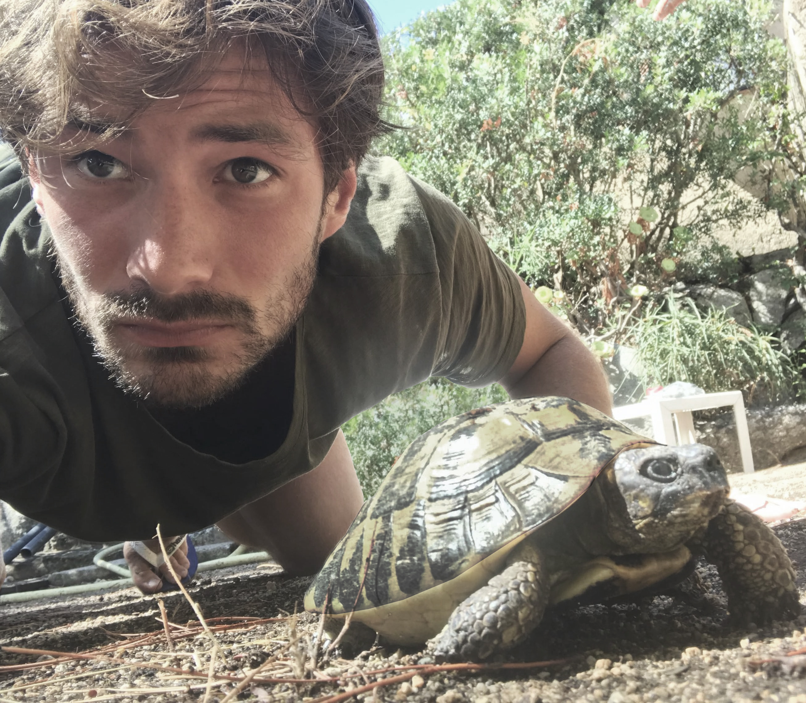

Briefly

Contact
- Email loucas.pillaud-vivien [at] enpc [dot] fr
- Address Bureau 215, 6 et 8 avenue Blaise Pascal, Cité Descartes — Cermics
- Scholar Google Scholar
Research Interests
My research sits at the intersection of optimization, probability and statistics, with a focus on understanding the mathematical mechanisms behind learning algorithms. I am particularly interested in the training dynamics of neural networks: how does gradient descent navigate non-convex landscapes, and why does it end up finding solutions that generalize? Since we barely understand gradient flow in these settings, I tend to start there before worrying about discrete updates.
A recurring theme in my work is the role of structure — geometric, algebraic, stochastic — in shaping the behavior of algorithms. This includes the implicit bias of overparametrized models (why does SGD favor simple solutions without being told to?), the interplay between architecture and the geometry of the loss landscape, and how the noise inherent to stochastic methods can actually help rather than hinder learning. I also have a lasting interest in kernel methods and spectral approaches, which offer a rich functional-analytic framework for these questions.
More recently, I have been working on single- and multi-index models as a natural testbed for feature learning in neural networks, and on variational inference methods. I enjoy problems where continuous-time dynamics, PDEs and stochastic differential equations shed light on fundamentally discrete algorithms.
Selected Publications
For a complete list, rendez-vous to my Google Scholar page.
Selected Presentations
- Label noise (stochastic) gradient descent implicitly solves the Lasso for quadratic parametrisation Slides
- Some results on the role of stochasticity in learning algorithms Slides
- Some results on the role of stochasticity in learning algorithms Slides
- Some results on the role of stochasticity in learning algorithms Slides
- Model order reduction by spectral gap optimization Slides
- Implicit Bias of SGD for Diagonal Linear Networks: a Provable Benefit of Stochasticity Slides
- Two results on Stochastic gradient descent in Hilbert spaces for Machine Learning problems Slides
- Statistical Estimation of the Poincaré constant and Application to Sampling Multimodal Distributions Slides
- Statistical Optimality of Stochastic Gradient Descent through Multiple Passes Slides Poster
- Langevin dynamics and applications to Machine Learning Slides
- Comparing Dynamics: Deep Neural Networks versus Glassy systems Slides
- Statistical Optimality of Stochastic Gradient Descent through Multiple Passes Slides Poster
- Exponential convergence of testing error for stochastic gradient methods Slides Video Poster